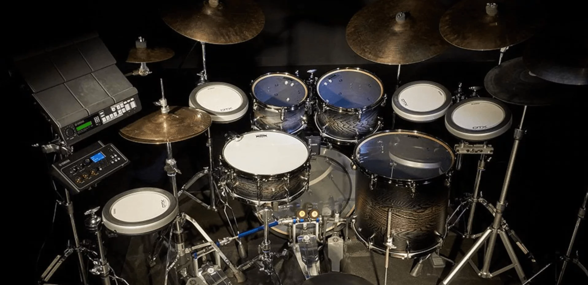

Para los demás musicos es fácil hablar y pedir un buen ritmo, pero solo nosotros sabemos cuan dificil es hacer lo que para los demás músicos solo son palabras
Cuando pensamos en percusión indemiatamende se nos viene a la cabeza instrumentos tales como, baterias, timbales, tambores, congas, campanas etc...

La batería es un conjunto de instrumentos musicales de percusión usado por muchas agrupaciones musicales. En algunos países, el término «batería» también se refiere al músico que toca estos instrumentos, al igual que el término «baterista», ambos equivalentes.
Los timbales, timbaletas, pailas, tarolas tropicales, minitoms o minitarolas, son tambores cilíndricos, de un solo parche, con armazón de metal, más cortos que los tom toms, y afinados más agudos, que se pueden acompañar con percusión auxiliar, estos instrumentos son indispensables a la hora de formar alguna orquesta de música bailable, ya que son los que llevan casi toda la base ritmica, se puede improvisar en el timbal, entonces por ello es un instrumento indispensable para cualquier orquesta
La conga1 o tumbadora es un instrumento membranófono de percusión de raíces africanas, que fue desarrollado en Cuba. Además de su importancia dentro de la percusión en la música afrocubana, la conga se convirtió en un instrumento fundamental en la interpretación de otros ritmos latinos como la salsa, el merengue y la timba cubana.